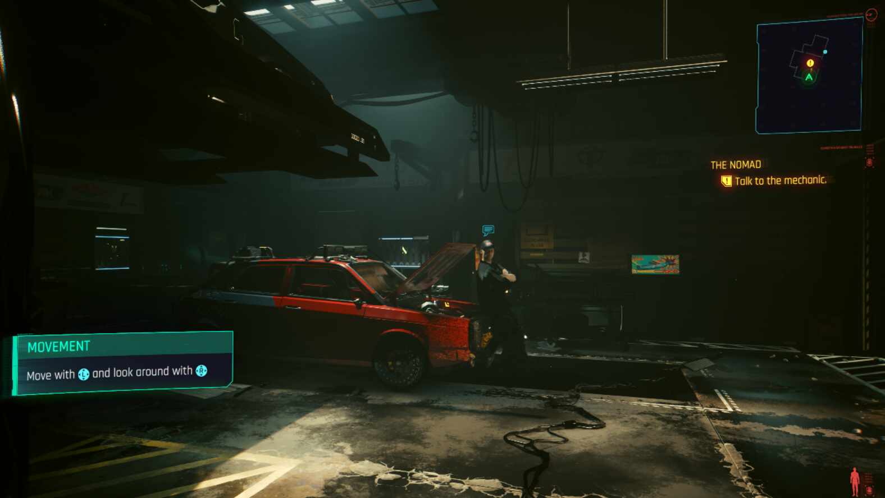
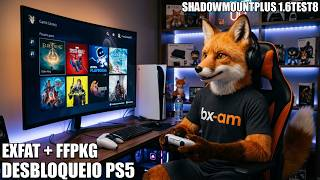
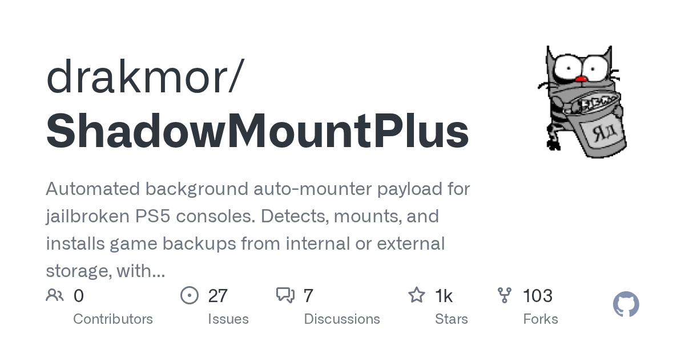
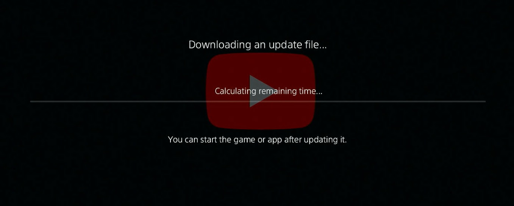
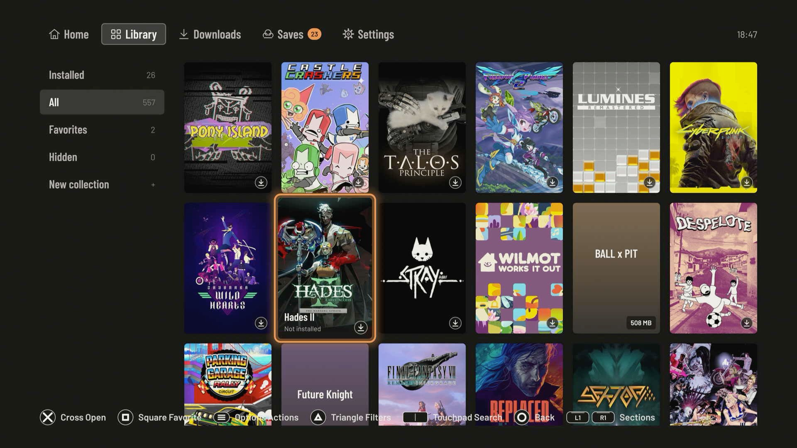
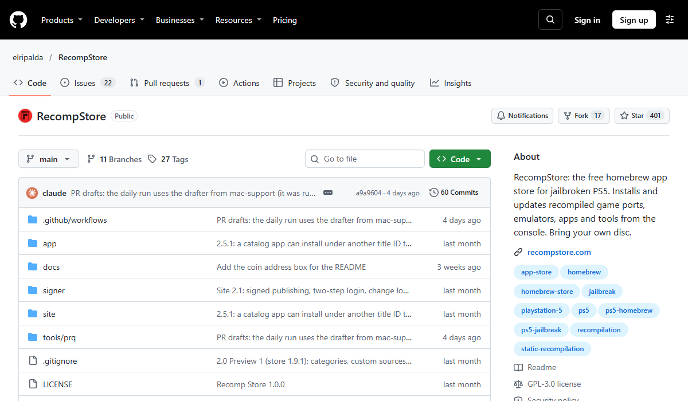

Jailbreak, payloads e rodar Steam no PS5.
| Vídeo | Projeto | O que faz | Pasta de origem | |
|---|---|---|---|---|
| GUIA COMPLETO DO EMULADOR DE PS5 PARA PC! - Kyty |  | KytyPS5/KytyPS5 | Camada de tradução de PS5 para Windows/Linux/macOS (experimental). | PORTS DE JOGOS PARA PC E CONSOLES / PORTS DE PS5 PARA PC GITHUB |
 MONTANDO IMAGEM DE JOGOS EM EXFAT E FFPKG NO PS5 |  | drakmor/ShadowMountPlus | Payload que monta discos externos sozinho no PS5 desbloqueado. | PS5 DESBLOQUEADO / APPS FERRAMENTAS / FERRAMENTAS DE APPS QUE USA NO DESBLOQUEIO |
| INSTALANDO ATUALIZAÇÃO Y2JB AUTOLOADER V1.0.3 PA |  | notmaj0r/Y2JB | Execução de código no PS5 pelo app do YouTube (jailbreak). | PORTS DE JOGOS PARA PC E CONSOLES / PORTS DE SWITCH 1 PARA PC |
| PLAYDEN PS5: JOGOS DA STEAM NO PLAYSTATION 5? Ap |  | leolobato/playden-ps5 | Roda jogos Windows da Steam na biblioteca do PS5 desbloqueado. | PS5 DESBLOQUEADO / APPS FERRAMENTAS / STEAM OS PARA PS5 |
| sem vídeo |  | elripalda/RecompStore | Loja de homebrew do PS5 desbloqueado: ports recompilados e emuladores. | curado — busca na internet |